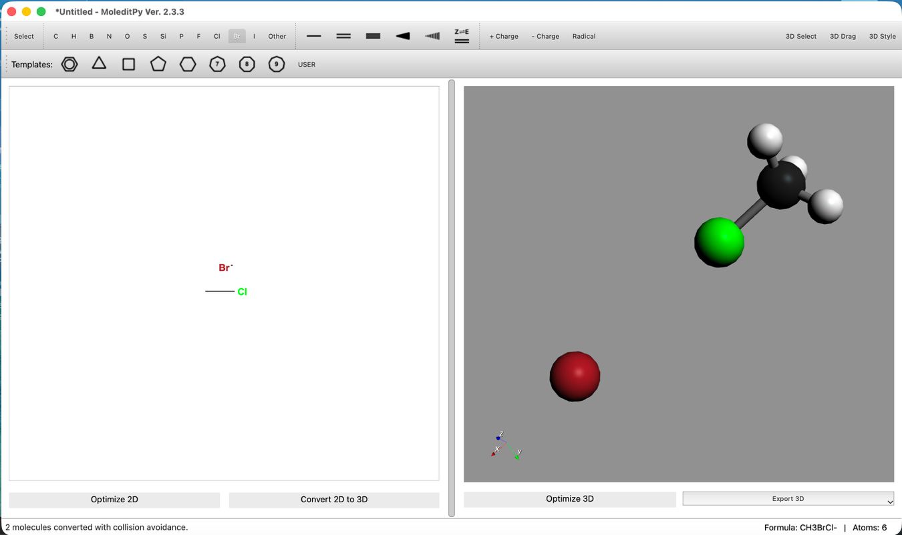
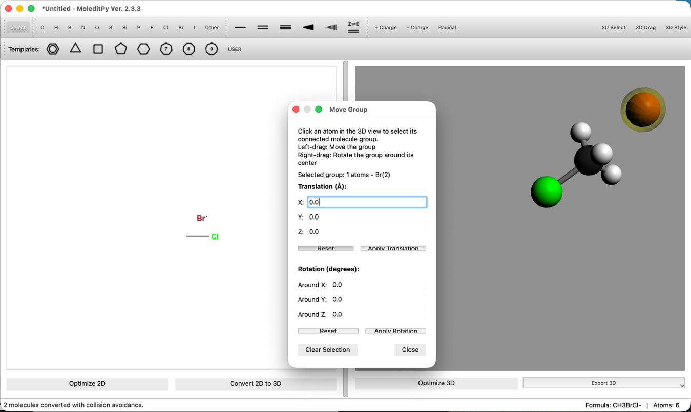
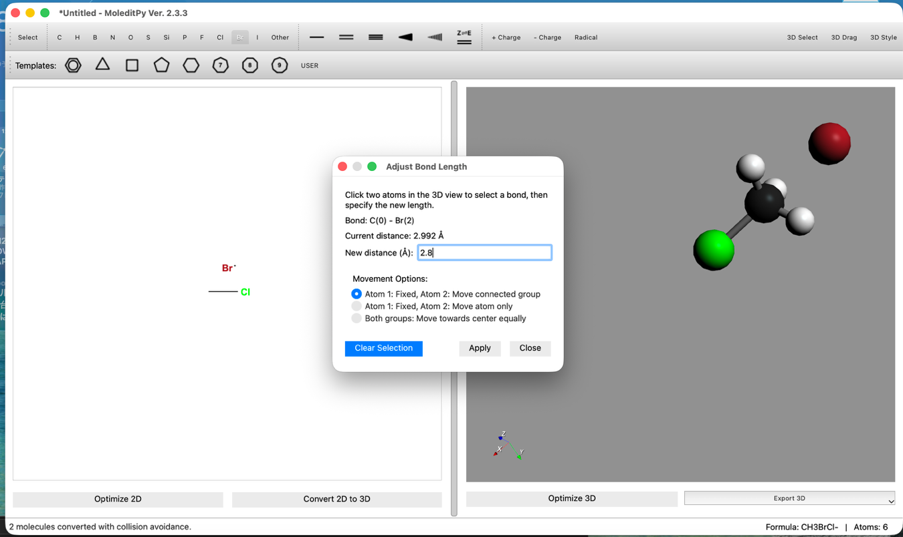
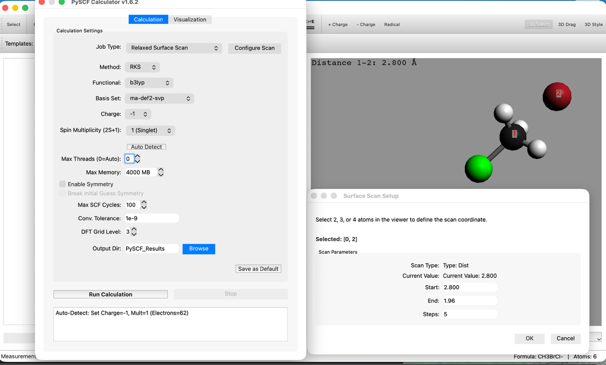
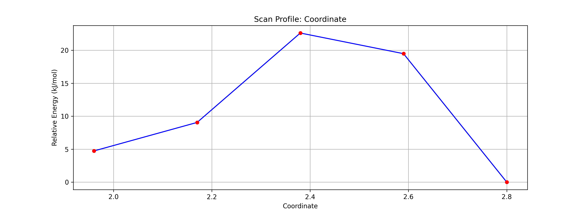
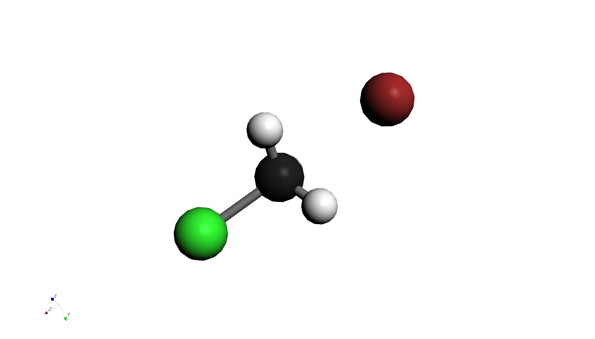
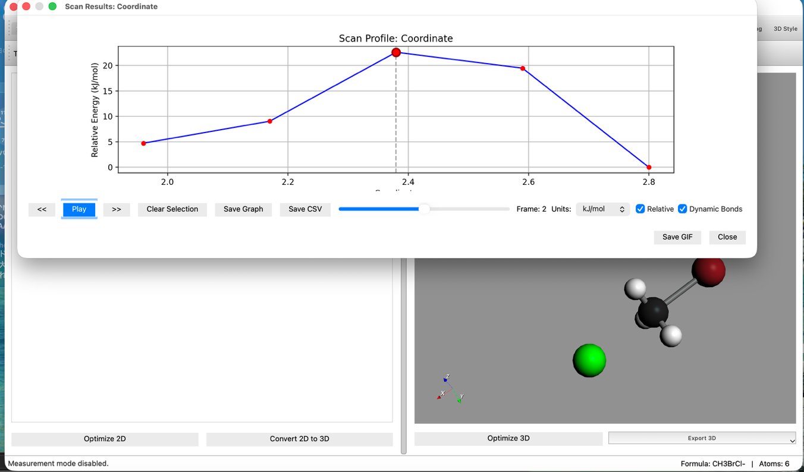
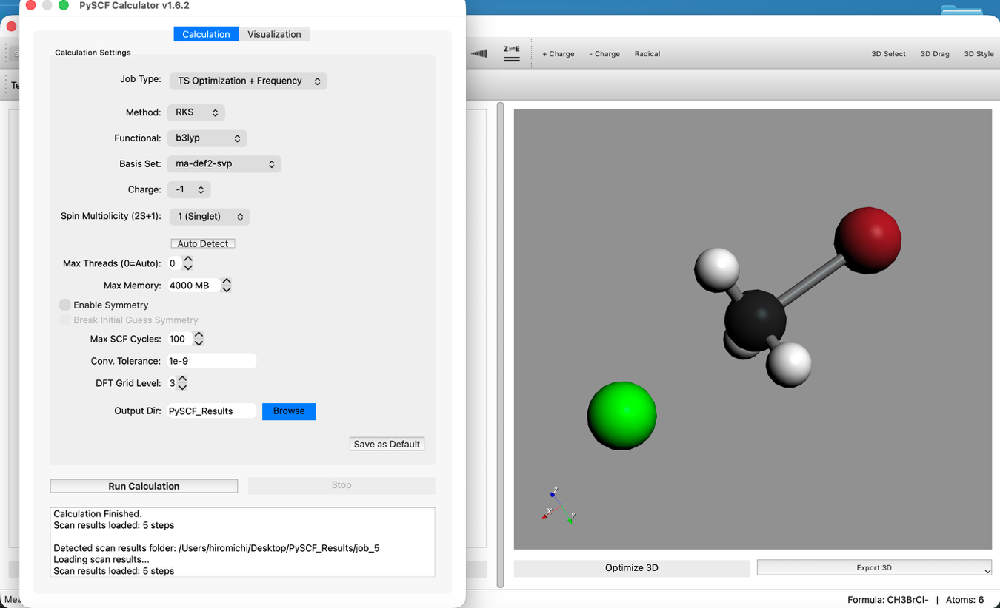
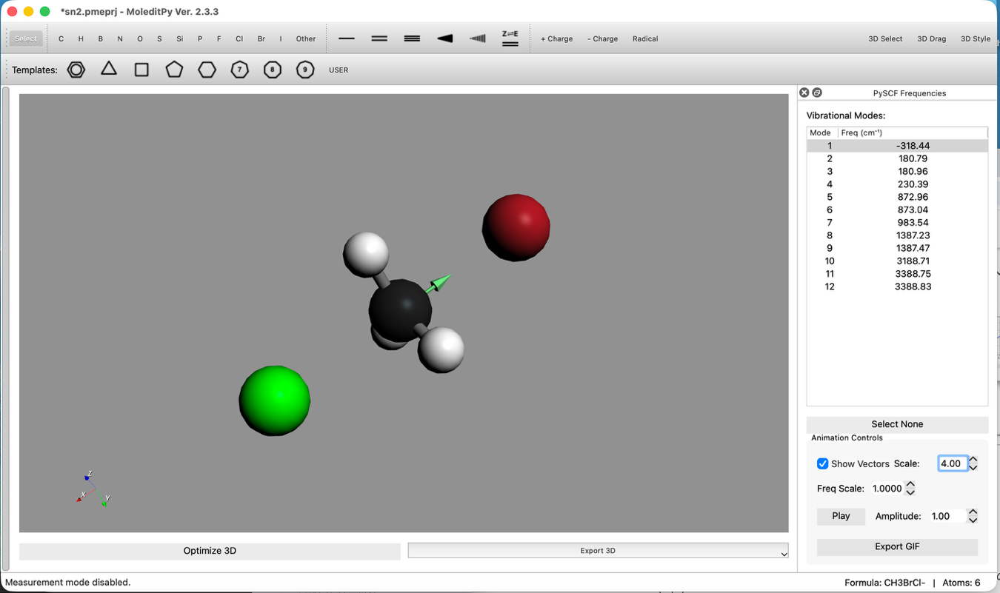
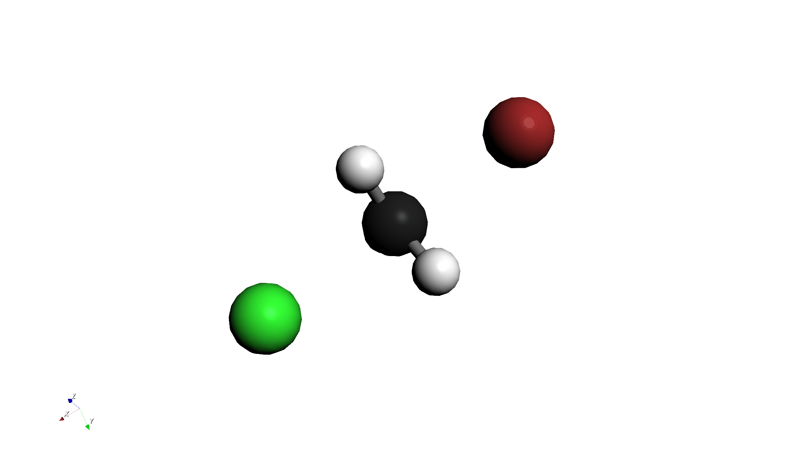

目的
クロロメタン(CH3Cl)と臭化物イオン(Br-)のSN2置換反応を題材に、反応座標のスキャン計算(Relaxed
Scan)を行い、エネルギー障壁を見積もります。さらに、その構造を初期値として遷移状態(TS)計算と振動解析を行い、虚振動を確認します。
操作手順
Step 1: 分子の描画と配置
- 分子の描画:
- クロロメタン (CH3Cl) を描画します。
- その近くに臭化物イオン (Br-) を描画します。
- 3D変換:
- ツールバーの "Convert 2D to 3D" を押して3D構造に変換します。

- 位置調整:
- "3D Edit > Move Group..." ツール等を使い、Br- を炭素原子の背面攻撃側（Clの反対側）に配置します。

- 結合距離の調整:
- "3D Edit > Adjust Bond Length..." ツールを使い、C-Br間の距離を 2.8 Å に設定します。

Step 2: リラックススキャン計算 (Relaxed Scan)
- PySCF Calculatorの起動:
- Extensions > PySCF Calculator を開きます。
- スキャン設定:
- Modeを Relaxed Surface Scan に設定します。
- "Configure Scan" ボタンを押し、Distanceタブで以下のように設定します:
- Start: 2.8 Å
- End: 1.96 Å
- Steps: 5
- この設定は、BrがCに近づいていく過程を計算します。

- 計算レベルの設定:
- Method: RKS (B3LYP)
- Basis: ma-def2-svp
- 注: アニオンの計算には ma-def2-svp のような拡散基底関数(diffuse
function)を含む基底関数が推奨されます。STO-3Gより時間がかかります。
- 計算実行: "Run Calculation" をクリックします。時間がかかるので待ちます。
Step 3: エネルギー図と遷移状態の推定
- 結果の確認:
- 計算終了後、Energy Diagramを確認します。活性化エネルギー障壁(山なりのグラフ)が表示されているはずです。
- アニメーション再生ボタンを押し、反応の様子を確認します。

（グラフの右側はC-Br距離が長い初期状態：CH3Cl +
Br-、左側はC-Br距離が短い生成物側：CH3Br + Cl-を表します）

- TS候補の選択:
- グラフ上の 最もエネルギーが高い点(Highest Point) をクリックします。
- これにより、そのステップの構造がメイン画面に反映されます。これが遷移状態(TS)の良き初期構造となります。

Step 4: 遷移状態(TS)計算と振動解析
- 計算設定の変更:
- Calculationタブに戻ります。
- Job Type:
TS Optimization + Frequency に変更します。
- その他の設定(B3LYP / ma-def2-svp)は変更しません。

- 計算実行: 再度 "Run Calculation" をクリックします。
Step 5: 虚振動の確認
- 振動モードの確認:
- 計算完了後、Vibrational Modesリストを確認します。
- 負の振動数 (Imaginary Frequency) が1つだけ存在することを確認します。これは遷移状態であることを示します。
- そのモードを選択し、アニメーションで原子が反応座標に沿って動いていることを確認します。

